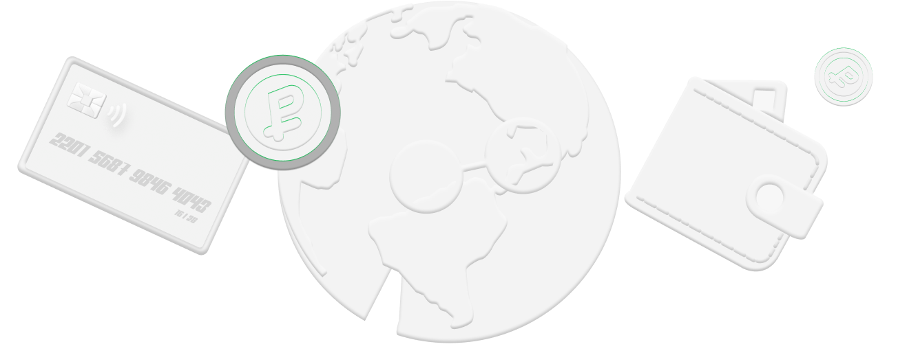

О бренде
Trace медиа о практичной переработке. Мы помогаем разбираться в переработке, сортировать отходы, экономить деньги и формировать экологичные привычки
Стайлгайд 2.0



Мы уверены, мусор — это актив нашего времени. Забудь про эко-добродетель. Trace научит тебя монетизировать отходы. Спаси свой кошелёк и планету. Мы не проповедуем, а зарабатываем
Экономим деньги и ресурсы
За лучшее для планеты
Всё понятно без сложных слов
Маленькие шаги — большие перемены


Лого отражает стремительный характер медиа. При использовании лого важно соблюдать охранные поля, равные половине высоты лого
Говорим честно и по делу
Без сложных терминов, по-человечески
Показываем пользу и экономию